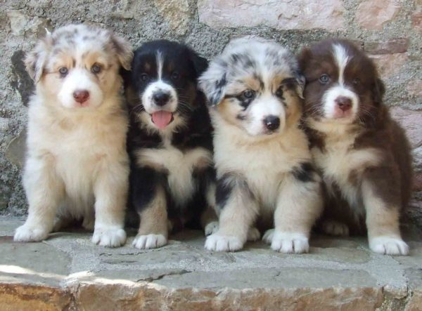

Luca's Portfolio
YouTube
FOLLOW
Twitter
Contact me

Le 7 virtù del
Bushido
:
義, Gi: Onestà e Giustizia.
勇, Yu: Eroico Coraggio.
仁, Jin: Compassione.
礼, Rei: Gentile Cortesia.
誠, Makoto: Completa Sincerità.
名誉, Meiyo: Onore.
忠義, Chugi: Dovere e Lealtà